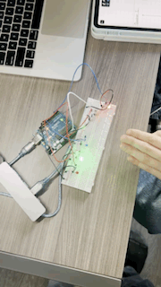
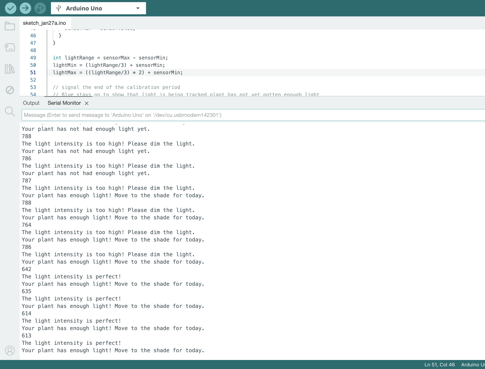
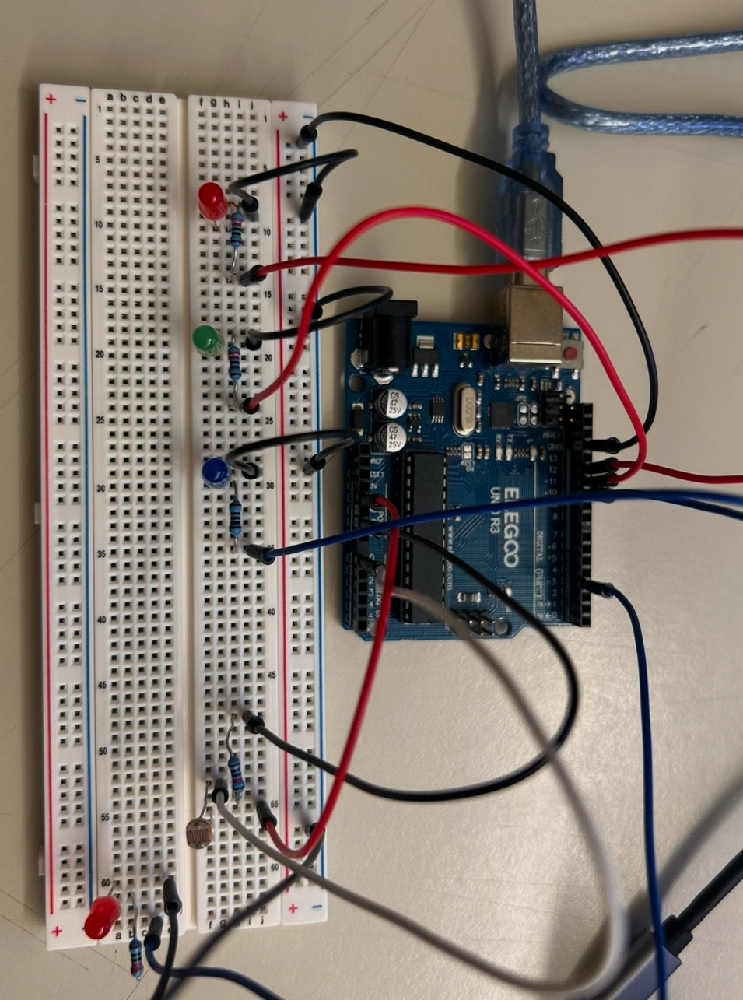
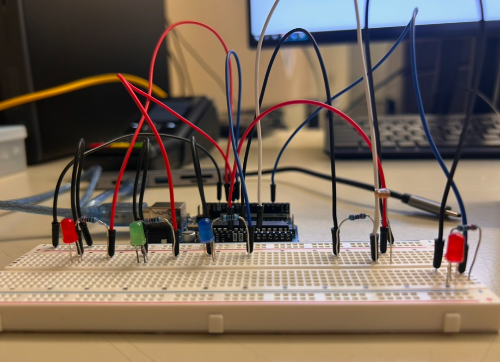
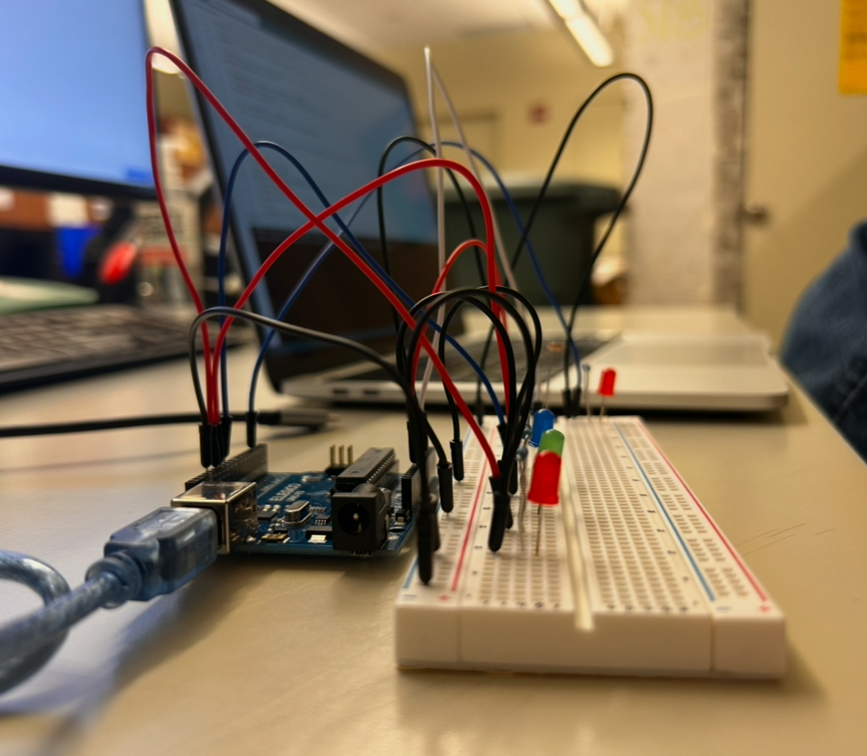
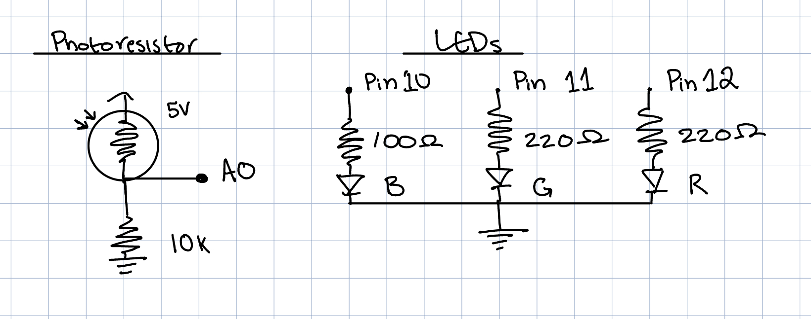
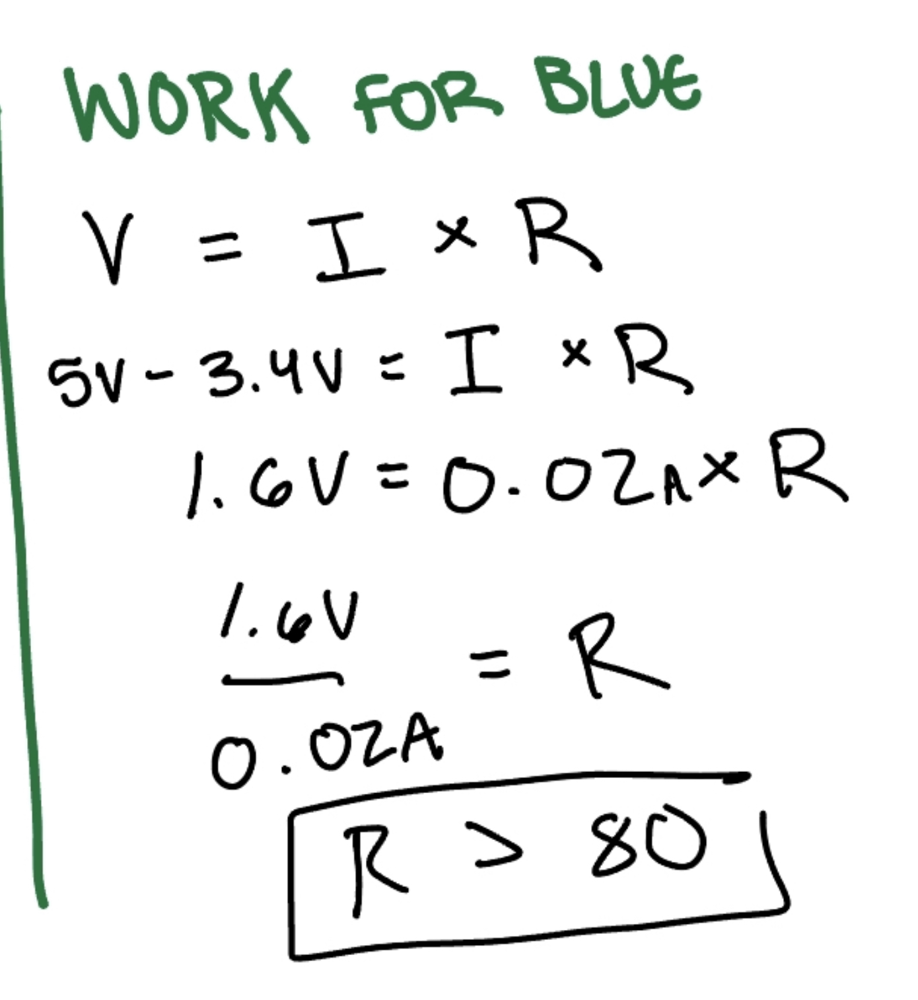
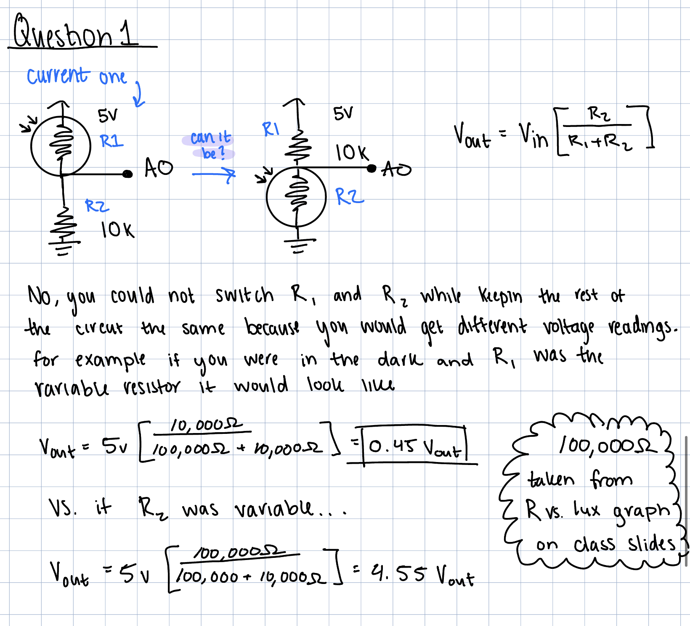
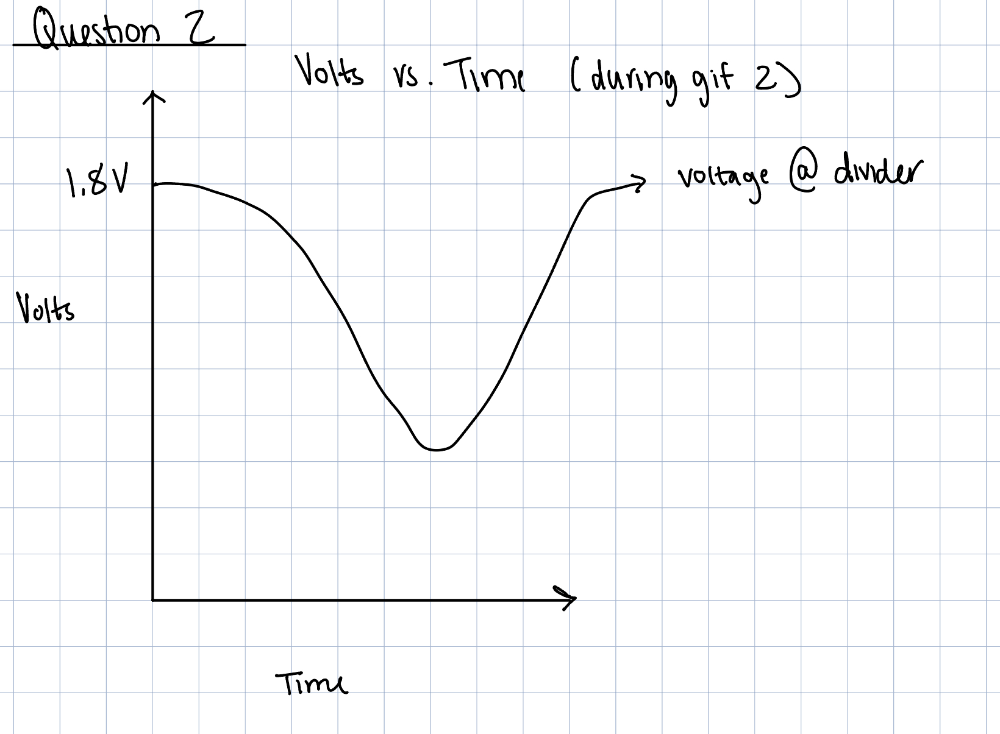
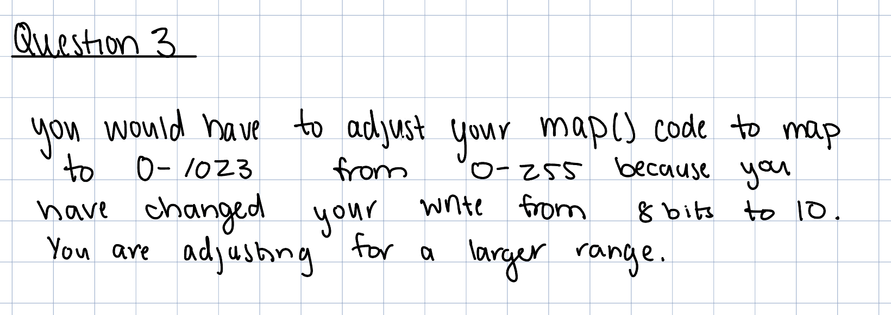

This is my circut in action!
GIF 1: Not enough light (blue led) to enough light (green led)

GIF 2: Changing Light intensity
Serial Monitor Example! (from a different run then the gifs were taken because I forgot to screenshot it)
Images!
Circut
  Schematic!
Work for 220 Ohms for Red and Green: Values plugged into ohms law where I found you need at least 160 ohms of resistance, so I chose the next closest higher number (too high would create too weak a current) I have in resistors, 220.

Work for 100 Ohms for Blue: Values plugged into ohms law where I found you need at least 80 ohms of resistance, so I chose the next closest higher number (too high would create too weak a current) I have in resistors, 100.
Why 10k ohms for photoresistor
10k Ohms for the photoresistor helps us to use less power. The photoresistor would work with less but 10k is a nice convention. Without resistence, when the variable resistor is no resistance current would be essentially infinite.
Code!
// Variables
// pin that the sensor (photoresistor) is attached to
const int sensorPin = A0;
// pin that the Red LED is attached to (fading)
const int ledPinFade = 3;
// pin that the Blue LED is attached to
const int ledPinBlue = 10;
// pin that the Green LED is attached to
const int ledPinGreen = 11;
// pin that the Red LED is attached to
const int ledPinRed = 12;
// the sensor value
int sensorValue = 0;
// minimum sensor value
int sensorMin = 1023;
// maximum sensor value
int sensorMax = 0;
// amount of light plant is getting
int lightTracker = 0;
// will be referenced to see if light is too dim
int lightMin = 0;
// will be referenced to see if light is too bright
int lightMax = 0;
void setup() {
// initializes serial monitor so that things can begin printing
Serial.begin(9600);
//initializes ledPinFade as an output
pinMode(ledPinFade, OUTPUT);
//initializes ledPinBlue as an output
pinMode(ledPinBlue, OUTPUT);
//initializes ledPinGreen as an output
pinMode(ledPinGreen, OUTPUT);
//initializes ledPinRed as an output
pinMode(ledPinRed, OUTPUT);
//Calibration
// turn on all LEDs to signal the start of the calibration period:
// fading red on
digitalWrite(ledPinFade, HIGH);
// blue on
digitalWrite(ledPinBlue, HIGH);
// green on
digitalWrite(ledPinGreen, HIGH);
// red on
digitalWrite(ledPinRed, HIGH);
// calibrate during the first five seconds
while (millis() < 5000) {
// reads valvue from voltage divider photoresistor
sensorValue = analogRead(sensorPin);
// record the maximum sensor value
if (sensorValue > sensorMax) {
// update sensorMax to sensorValue if sensorValue is higher
sensorMax = sensorValue;
}
// record the minimum sensor value
if (sensorValue < sensorMin) {
// update sensorMin to sensorValue if sensorValue is lower
sensorMin = sensorValue;
}
}
// variable for the range of light intensity
int lightRange = sensorMax - sensorMin;
// note the bottom third of light itensity
lightMin = (lightRange/3) + sensorMin;
// note the top third of light itensity
lightMax = ((lightRange/3) * 2) + sensorMin;
// signal the end of the calibration period
// Blue stays on to show that light is being tracked plant has not yet gotten enough light
// fade red off
digitalWrite(ledPinFade, LOW);
// green off
digitalWrite(ledPinGreen, LOW);
// red off
digitalWrite(ledPinRed, LOW);
}
void loop() {
// read the sensor:
sensorValue = analogRead(sensorPin);
// print to sensor value to serial monitor
Serial.println(sensorValue);
// if sensor value is in the middle range of the lightrange
if (sensorValue >= lightMin && sensorValue < lightMax) {
// print to monitor that the light intesity is perfect
Serial.println("The light intensity is perfect!");
// add one point to the total light tracker
lightTracker = lightTracker + 1;
// if the sensorValue is in the bottom third of light range
} else if (sensorValue < lightMin) {
// print that the light intensity is too low to monitor
Serial.println("The light intensity is too low!");
// else (if sensorValue is in top third of light intensity range)
} else {
// print that the intensity it too high to the monitor
Serial.println("The light intensity is too high! Please dim the light.");
// add five points to light tracker
lightTracker = lightTracker + 5;
}
// if the total amount of light is less than 360 (arbitrary number i chose to signify enough light for the make believe plant)
if (lightTracker <= 360) {
// blue light
digitalWrite(ledPinBlue, HIGH);
// print that the plant has not had enough light to monitor
Serial.println("Your plant has not had enough light yet.");
// if the total amount of light is between 360 and 480 (arbitrary numbers i chose to signify enough light for the make believe plant)
} else if (lightTracker >= 360 && lightTracker < 480) {
// blue led off
digitalWrite(ledPinBlue, LOW);
// green led on
digitalWrite(ledPinGreen, HIGH);
// print that plant has had enough light to monitor
Serial.println("Your plant has enough light! Move to the shade for today.");
// else (if the lighTracker is over 480)
} else {
// green led off
digitalWrite(ledPinGreen, LOW);
//print that the plant has had too much light to monitor
Serial.println("Your plant has had too much light! Move it before it burns!");
// red led on
digitalWrite(ledPinRed, HIGH);
}
// in case the sensor value is outside the range seen during calibration
sensorValue = constrain(sensorValue, sensorMin, sensorMax);
// apply the calibration to the sensor reading
sensorValue = map(sensorValue, sensorMin, sensorMax, 0, 255);
// fade the LED using the calibrated value to show if the light is too bright
analogWrite(ledPinFade, sensorValue);
// delay so loop runs every second
delay(1000);
}
Questions!
1. In your voltage divider, can the variable resistor be either R1 or R2 or does it need to be one or the other? Justify your answer with example calculations.
2.Draw a graph where the x-axis is time and the y-axis is voltage. Plot the voltage at V-measure of your voltage divider of your shared gif.
3. AnalogWrite and analogRead are respectively 8-bit and 10-bit values. Imagine you had 10-bit PWM and a 16-bit analog-to-digital converter instead. How would this change your map() code? Explain your answer.
